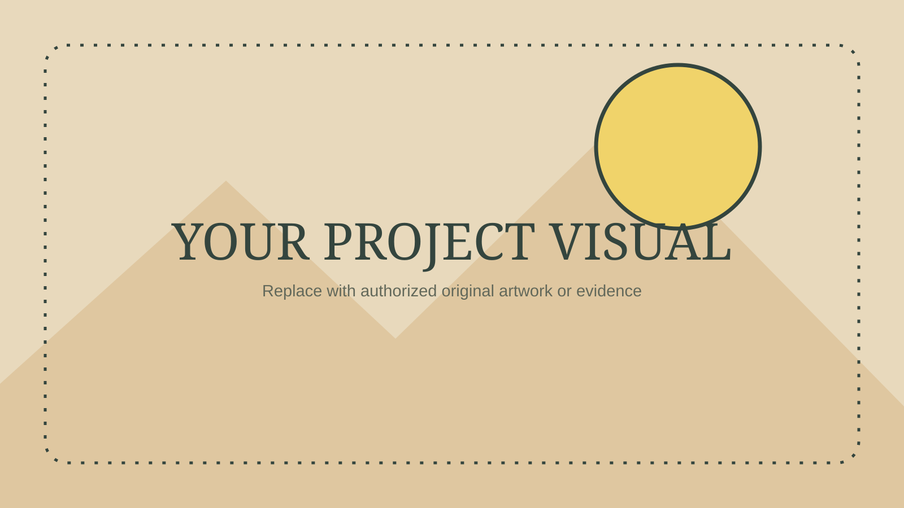

Concept
Set the question this stage answers.
An adaptable cinematic presentation with a continuous route, a traveler, and pages that assemble as the camera arrives.
Press → or Space to beginWrite concise copy here. Keep the dominant image authentic, uncropped, and large enough to understand.
One page = one point
Set the question this stage answers.
Show the real work and its relationships.
Finish with authentic evidence.
Make the local UI interactive without disturbing global arrow-key navigation or the traveling marker.

→ / Space next · ← previous · wheel to scrub · Esc finish motion · Home first · End last